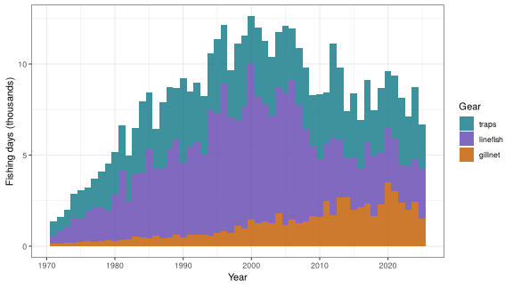
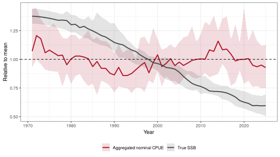
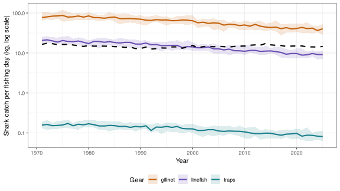
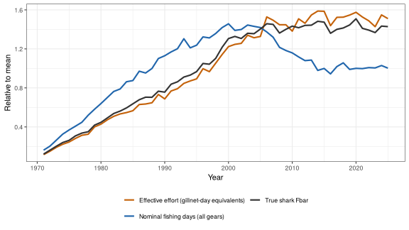
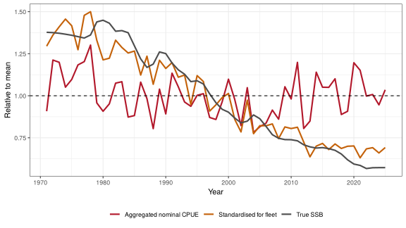
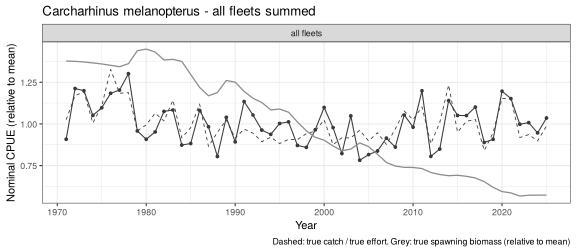

Training example: summed effort and nominal CPUE hide a shark decline
Source:vignettes/floss-04-cpue-aggregation.Rmd
floss-04-cpue-aggregation.RmdThis training example uses the blacktip reef shark (Carcharhinus melanopterus) in the three-fleet reef fishery to show why nominal CPUE computed from effort summed over fleets can be very misleading. The shark is caught by all three gears, but a gillnet day is far more lethal to sharks than a linefish day or a trap day, and the gear mix changes strongly over time. Card 8 of the teaching scenarios is the short version of this example.
Predict first. After the 1990s, total fishing days in the reef fishery level off and then fall, and catch per fishing day over all fleets stays roughly constant. Is the shark stock stable? Is fishing pressure on the shark falling?
The fishery and the data
The fishery is reef_3fleets: trap effort is stable,
linefish effort rises first and then falls, and gillnet effort rises
late. Effort is reported in fishing days by fleet
(reef_oem(): one unit of relative effort is 4000 trap days,
1500 gillnet days or 3000 linefish days). Catch, effort and true values
come from sample_data().
library(FLOSS)
library(ggplot2)
sp <- load_species("carcharhinus_melanopterus")
fy <- load_fishery("reef_3fleets")
oem <- reef_oem()
om <- build_om(sp, fy, nsim = 20)
dat <- sample_data(om, oem, iters = 1:20)A fishing day means something very different for each gear:
| Gear | What one fishing day represents | Encounter with reef sharks |
|---|---|---|
| Traps | Hauling and re-baiting a set of basket traps | Practically none; sharks rarely enter or are retained |
| Linefish | A day of handlining or a short longline set on the reef slope | Occasional hooked shark |
| Gillnet | Setting and hauling net panels, often overnight | High; sharks become entangled across a broad size range |
Two helpers summarise the iterations (median and 90% interval) and express each series relative to its mean, so that trends can be compared.
med_df <- function(d, value, by = "year") {
s <- split(d[[value]], d[by], drop = TRUE)
q <- t(sapply(s, stats::quantile, c(0.05, 0.5, 0.95), na.rm = TRUE))
out <- data.frame(do.call(rbind, strsplit(rownames(q), ".", fixed = TRUE)), q,
row.names = NULL)
names(out) <- c(by, "lo", "med", "hi")
out$year <- as.numeric(out$year)
out
}
rel_mean <- function(x, g) x / stats::ave(x, g, FUN = mean)
gear_cols <- c(traps = "#1b7f8c", gillnet = "#c4620a", linefish = "#6a4fb3")What the aggregated data appear to show
ef <- effort_table(dat, "fleet")
ef$source <- factor(ef$source, levels = c("traps", "linefish", "gillnet"))
ggplot(subset(ef, iter == 1), aes(year, effort / 1000, fill = source)) +
geom_col(width = 1, alpha = 0.85) +
scale_fill_manual(values = gear_cols) +
labs(x = "Year", y = "Fishing days (thousands)", fill = "Gear") + theme_bw()
Reported fishing days by gear (iteration 1). Total days peak in the 1990s<U+2013>2000s and then fall, because linefish effort declines, while gillnet days keep increasing.
na <- nominal_cpue(dat, sp$species, by = "aggregate")
na$rel <- rel_mean(na$cpue, na$iter)
tr <- dat$truth
tr$rel <- rel_mean(tr$ssb, tr$iter)
df_agg <- rbind(cbind(med_df(na, "rel"), series = "Aggregated nominal CPUE"),
cbind(med_df(tr, "rel"), series = "True SSB"))
ggplot(df_agg, aes(year, med, colour = series, fill = series)) +
geom_ribbon(aes(ymin = lo, ymax = hi), alpha = 0.15, colour = NA) +
geom_line(linewidth = 1) + geom_hline(yintercept = 1, linetype = 2) +
scale_colour_manual(values = c("Aggregated nominal CPUE" = "#b2182b", "True SSB" = "grey30")) +
scale_fill_manual(values = c("Aggregated nominal CPUE" = "#b2182b", "True SSB" = "grey30")) +
labs(x = "Year", y = "Relative to mean", colour = NULL, fill = NULL) +
theme_bw() + theme(legend.position = "bottom")
Aggregated nominal CPUE (total shark catch / total fishing days) compared with true spawning biomass, both relative to their mean (medians and 90% intervals over iterations). The aggregated CPUE stays roughly flat, and rises in the 2000s, while the stock declines.
The aggregated data tell a reassuring but wrong story: total effort has stopped growing and fallen, and the catch per fishing day is stable. A naive conclusion is that the shark stock is stable and that fishing pressure has levelled off. In fact, shark spawning biomass declines throughout.
Why: a gillnet day catches far more sharks
The aggregated CPUE is an effort-weighted mean of the fleet CPUEs:
\[ \text{CPUE}^{\text{agg}}_{y} = \frac{\sum_f C_{f,y}}{\sum_f E_{f,y}} = \sum_f p_{f,y}\,\text{CPUE}_{f,y}, \qquad p_{f,y} = \frac{E_{f,y}}{\sum_{f'} E_{f',y}}, \]
and with \(\text{CPUE}_{f,y} \approx q_f V_{f,y}\), where \(V_{f,y}\) is the biomass vulnerable to fleet \(f\),
\[ \text{CPUE}^{\text{agg}}_{y} \approx \sum_f p_{f,y}\, q_f\, V_{f,y} . \]
The index changes with the effort mix \(p_{f,y}\) as well as with the stock. When effort shifts towards a gear with a high catchability per day, the index goes up even if the stock goes down.
In FLOSS, apical F of fleet \(f\) is
relq[f] x Fmsy x effort[f] (relative effort), and one unit
of relative effort is effort_days[f] fishing days. The
catchability per fishing day is therefore proportional to
relq / effort_days:
relq <- unlist(sp$relq)
days <- unlist(oem$effort$days)[names(relq)]
q_day <- relq / days # apical F per fishing day / Fmsy
nc <- nominal_cpue(dat, sp$species, by = "fleet")
kg_day <- function(yy) tapply(nc$cpue[nc$year %in% yy], nc$source[nc$year %in% yy], median)
q_tab <- data.frame(
gear = names(q_day),
`relq` = relq,
`days per unit effort` = days,
`days equal to one gillnet day` = round(q_day["gillnet"] / q_day),
`shark kg/day 1980-1989` = round(kg_day(1980:1989)[names(q_day)], 2),
`shark kg/day 2016-2025` = round(kg_day(2016:2025)[names(q_day)], 2),
check.names = FALSE, row.names = NULL)
knitr::kable(q_tab, caption = "Catchability per fishing day and nominal catch per day of blacktip reef shark by gear.")| gear | relq | days per unit effort | days equal to one gillnet day | shark kg/day 1980-1989 | shark kg/day 2016-2025 |
|---|---|---|---|---|---|
| traps | 0.02 | 4000 | 187 | 0.15 | 0.09 |
| gillnet | 1.40 | 1500 | 1 | 74.64 | 41.04 |
| linefish | 0.40 | 3000 | 7 | 18.24 | 9.57 |
df_nc <- med_df(nc, "cpue", by = c("year", "source"))
df_na <- med_df(na, "cpue")
ggplot(df_nc, aes(year, med, colour = source, fill = source)) +
geom_ribbon(aes(ymin = lo, ymax = hi), alpha = 0.15, colour = NA) +
geom_line(linewidth = 1) +
geom_line(data = df_na, aes(year, med), inherit.aes = FALSE,
linetype = 2, linewidth = 1) +
scale_y_log10() +
scale_colour_manual(values = gear_cols) + scale_fill_manual(values = gear_cols) +
labs(x = "Year", y = "Shark catch per fishing day (kg, log scale)",
colour = "Gear", fill = "Gear") +
theme_bw() + theme(legend.position = "bottom")
Nominal catch per fishing day of blacktip reef shark by gear (log scale, medians and 90% intervals) and the aggregated CPUE (dashed). Each fleet CPUE declines with the stock, but they differ by orders of magnitude; the aggregated CPUE lies between them, wherever the effort mix puts it.
In this fishery, one gillnet day causes as much shark mortality as about 7 linefish days or about 187 trap days. Summing days across gears adds apples and oranges: the total is dominated by trap and linefish days, which catch few sharks, while the gillnet days that cause most of the shark mortality are a small part of it. The units are not compatible, and summed effort is not proportional to fishing mortality on the shark.
The continued decline follows gillnet effort
A meaningful measure of fishing pressure on the shark is effective effort, which weights each day by its catchability. In gillnet-day equivalents,
\[ E^{\text{eff}}_{y} = \sum_f \frac{q_f}{q_{\text{gillnet}}}\, E_{f,y} . \]
ef$w <- (q_day / q_day["gillnet"])[as.character(ef$source)]
pr <- do.call(rbind, lapply(split(ef, list(ef$iter, ef$year), drop = TRUE), function(x)
data.frame(iter = x$iter[1], year = x$year[1], nominal = sum(x$effort),
effective = sum(x$effort * x$w),
gillnet_share_days = x$effort[x$source == "gillnet"] / sum(x$effort),
gillnet_share_F = (x$effort * x$w)[x$source == "gillnet"] / sum(x$effort * x$w))))
pr <- merge(pr, tr[, c("iter", "year", "fbar", "ssb")], by = c("iter", "year"))
df_pr <- rbind(
cbind(med_df(transform(pr, r = rel_mean(nominal, iter)), "r"), series = "Nominal fishing days (all gears)"),
cbind(med_df(transform(pr, r = rel_mean(effective, iter)), "r"), series = "Effective effort (gillnet-day equivalents)"),
cbind(med_df(transform(pr, r = rel_mean(fbar, iter)), "r"), series = "True shark Fbar"))
ggplot(df_pr, aes(year, med, colour = series)) +
geom_line(linewidth = 1) +
scale_colour_manual(values = c("Nominal fishing days (all gears)" = "#2166ac",
"Effective effort (gillnet-day equivalents)" = "#c4620a",
"True shark Fbar" = "grey20")) +
labs(x = "Year", y = "Relative to mean", colour = NULL) +
theme_bw() + theme(legend.position = "bottom") + guides(colour = guide_legend(nrow = 2))
Nominal total fishing days, effective effort on the shark (gillnet-day equivalents) and true shark F (Fbar), relative to their mean (medians over iterations). Nominal effort falls after its peak, whereas effective effort and true F rise into the 2000s and then stay high.
pm <- stats::aggregate(cbind(nominal, effective, fbar) ~ year, pr, median)
gd <- stats::aggregate(effort ~ year + source, ef, median)
pm$gillnet <- gd$effort[gd$source == "gillnet"][match(pm$year, gd$year[gd$source == "gillnet"])]
pm$linefish <- gd$effort[gd$source == "linefish"][match(pm$year, gd$year[gd$source == "linefish"])]
post <- pm$year >= 2000
vars <- c(`Nominal days (all gears)` = "nominal", `Gillnet days` = "gillnet",
`Linefish days` = "linefish", `Effective effort` = "effective")
knitr::kable(data.frame(
`Effort measure` = names(vars),
`All years` = round(sapply(vars, function(v) stats::cor(pm[[v]], pm$fbar)), 2),
`2000 onwards` = round(sapply(vars, function(v) stats::cor(pm[[v]][post], pm$fbar[post])), 2),
check.names = FALSE, row.names = NULL),
caption = "Correlation of effort measures with the true shark F (medians over iterations).")| Effort measure | All years | 2000 onwards |
|---|---|---|
| Nominal days (all gears) | 0.77 | -0.58 |
| Gillnet days | 0.91 | 0.74 |
| Linefish days | 0.46 | -0.58 |
| Effective effort | 0.99 | 0.89 |
By 2025, total fishing days are 31% below their peak, but gillnets, with only 29% of all days, cause about 85% of the fishing mortality on the shark. Shark spawning biomass falls by 57% over the time series and is still declining at the end.
What gives it away. The continued decline of the shark is mostly consistent with the increase in gillnet effort, and the aggregated data hide it because:
- The effort unit is not compatible across gears. A gillnet day, a linefish day and a trap day have very different catchabilities for sharks, so summed days do not measure fishing pressure on the shark.
- The effort mix changes. As effort shifts from linefish (low \(q\)) to gillnets (high \(q\)), the aggregated catch per day is inflated, which offsets the decline in abundance.
- The numerically dominant gears hardly matter for the species. Trap days are many but catch almost no sharks, so changes in trap activity dilute or inflate the index regardless of the stock.
What to do instead
- Keep effort by fleet, and use CPUE of the fleets that interact with the species (here gillnet, with linefish as a second index).
- If fleets are combined, standardise CPUE with a model that includes fleet (and, where possible, vessel, area, season and net characteristics) as factors, so that the year effect is estimated within fleets rather than across a changing fleet mix.
- Treat changes in fleet catchability over time (more net panels,
longer soaks, monofilament, night setting) as effort
creep (
fishery(creep = ...)), and account for it. - Express effort as effective effort when the relative catchability of the fleets is known.
A log-linear model with year and fleet effects, fitted to the fleet CPUEs of one iteration, recovers the trend of the stock, unlike the aggregated nominal CPUE:
d1 <- subset(nc, iter == 1 & cpue > 0)
fit <- stats::glm(log(cpue) ~ factor(year) + source, data = d1)
yrs <- sort(unique(d1$year))
std <- exp(stats::predict(fit, data.frame(year = yrs, source = "gillnet")))
cmp <- rbind(
data.frame(year = yrs, value = std / mean(std), series = "Standardised for fleet"),
data.frame(year = na$year[na$iter == 1], value = na$rel[na$iter == 1],
series = "Aggregated nominal CPUE"),
data.frame(year = tr$year[tr$iter == 1], value = tr$rel[tr$iter == 1], series = "True SSB"))
ggplot(cmp, aes(year, value, colour = series)) +
geom_line(linewidth = 1) + geom_hline(yintercept = 1, linetype = 2) +
scale_colour_manual(values = c("Standardised for fleet" = "#c4620a",
"Aggregated nominal CPUE" = "#b2182b",
"True SSB" = "grey30")) +
labs(x = "Year", y = "Relative to mean", colour = NULL) +
theme_bw() + theme(legend.position = "bottom")
Iteration 1: aggregated nominal CPUE, CPUE standardised for fleet (log-linear model with year and fleet effects) and true SSB, relative to their mean.
The same comparison is available directly with
plot_aggregate():
plot_aggregate(dat, sp$species, what = "cpue", by = "aggregate", truth = TRUE)
Questions for trainees
- Using only total catch and total fishing days, what would you conclude about the status of the shark and about the trend in fishing pressure?
- How many trap days and linefish days are equivalent to one gillnet day in shark mortality? Why does this matter when effort is summed?
- Which effort series explains the continued decline after 2000, and why does a fall in total effort not imply a fall in fishing mortality?
- How would the aggregated CPUE change if trap effort doubled, with no change in the stock or in gillnet and linefish effort?
- What should a landing-site monitoring programme record so that a meaningful shark index can be built?